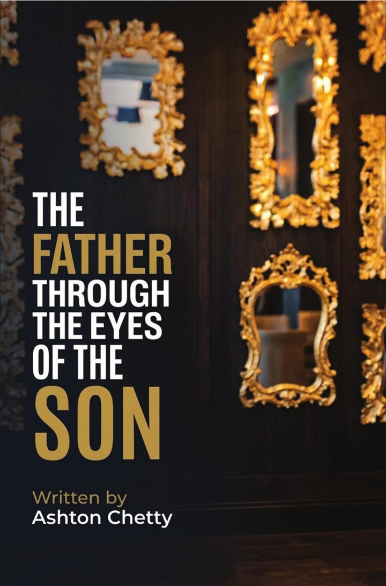
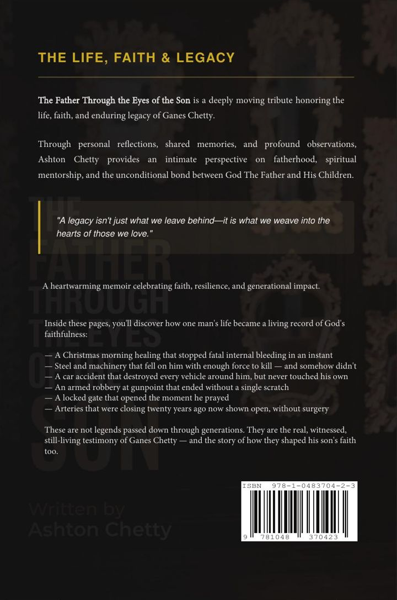

The Father through the eyes of the Son
The life, faith and legacy of Ganes Chetty.

A legacy isn't just what we leave behind—it is what we weave into the hearts of those we love.
About the book
The Father Through the Eyes of the Son is a deeply moving tribute honouring the life, faith and enduring legacy of Ganes Chetty.
Through personal reflections, shared memories and profound observations, Ashton Chetty gives an intimate perspective on fatherhood, spiritual mentorship, and the unconditional bond between God the Father and His children.
A heartwarming memoir celebrating faith, resilience and generational impact.

Watch the teaser
A 35-second look at the life, faith and legacy of Ganes Chetty.
One man's life, a living record of God's faithfulness
- A Christmas morning healing that stopped fatal internal bleeding in an instant
- Steel and machinery that fell on him with enough force to kill, and somehow didn't
- A car accident that destroyed every vehicle around him, but never touched his own
- An armed robbery at gunpoint that ended without a single scratch
- A locked gate that opened the moment he prayed
- Arteries that were closing twenty years ago, now shown open, without surgery
These are not legends passed down through generations. They are the real, witnessed, still-living testimony of Ganes Chetty, and the story of how they shaped his son's faith too.
What's inside
Scripture index
Every passage referenced, listed so you can return to it.
Timeline appendix
The key moments of his life, in order.
A closing letter
A personal letter from me, signed at the end of the book.
Letter
The largest page, with the most room for the text.
A5
Compact and easy to carry.
6 × 9 inch
The classic trade paperback size.
Get your copy
Order the book on Takealot, or email Ashton to ask about copies for family and church.
Order on Takealot